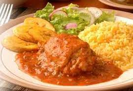

Seco De Pollo

Description
El Seco De Pollo is an easy and delicous ecuadorian dish. It's made with chicken and vegetables, so it's a healthy alternative to other chicken recipes.
Ingredients
- Chicken
- Tomato
- Onion
- Green Pimiento
- Cilantro
Steps
- cut the tomato, the onion, and the green pimiento by half
- Trow the halfs in a blender. add a cup of water and blend it
- In a pot, put the chicken and pour the blender's content all together
- Cook the chicken at slow fire
- Serve the chicken with rice
- Enjoy